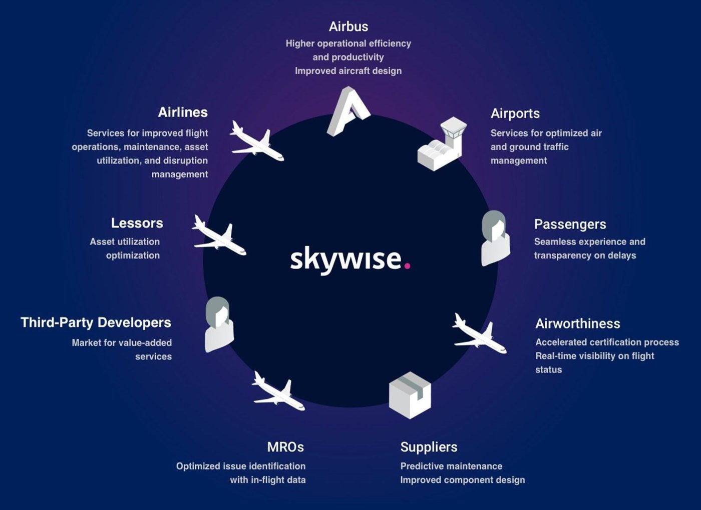

2024 à 2027
Toulouse
AlternanceIngénieur data, FAL A350
Airbus, département Manufacturing Engineering
Depuis 2024, je prépare mon diplôme d'ingénieur à ISAE-Supaero en alternance chez Airbus, au sein de l'ingénierie de production de la chaîne d'assemblage final (FAL) de l'A350.
J'y occupe un rôle de Business Data Analyst sur Skywise, la plateforme data d'Airbus bâtie sur Palantir Foundry. Je conçois et maintiens des applications utilisées en production, qui transforment les données de l'assemblage en indicateurs et en outils de suivi pour les équipes industrielles.
Ce poste me place à l'interface entre le terrain et la donnée : comprendre le besoin des équipes de production, le traduire en solution data, puis l'accompagner jusqu'à son usage au quotidien.
